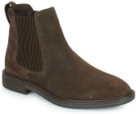
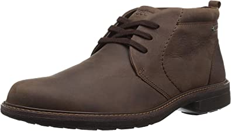
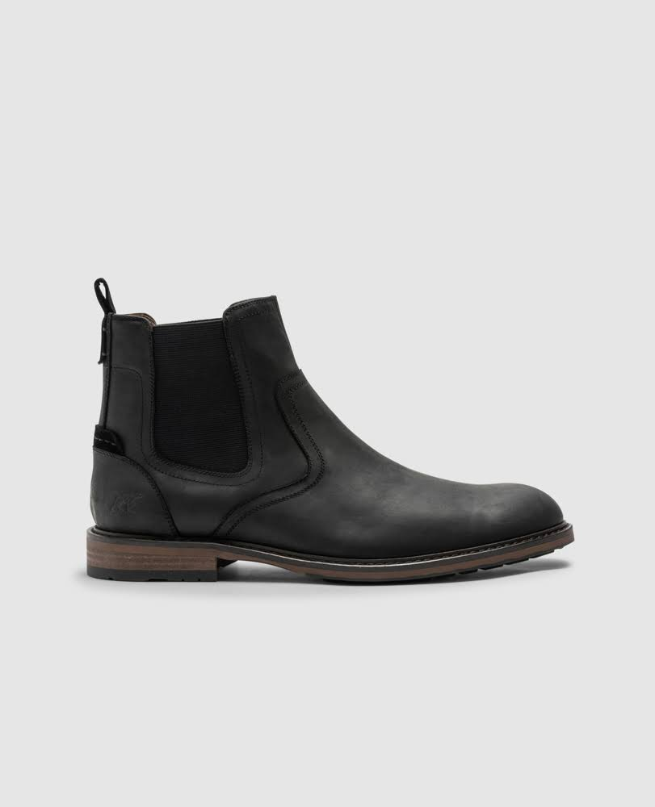
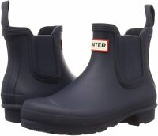
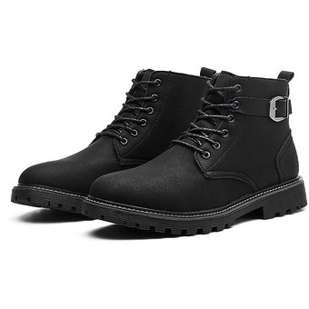
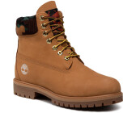
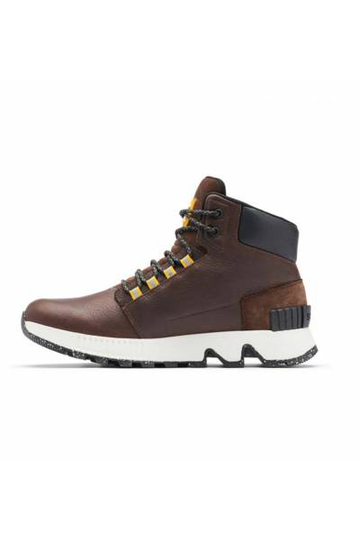
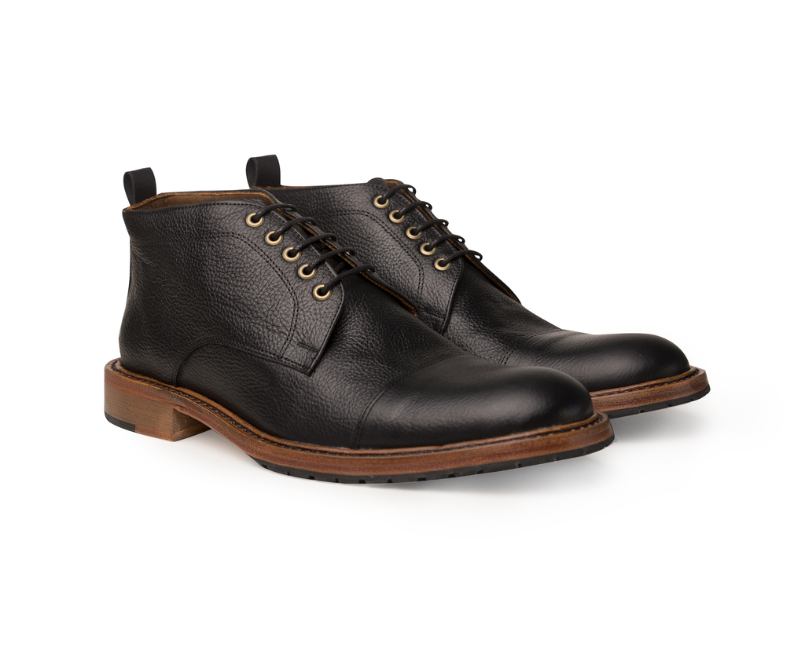
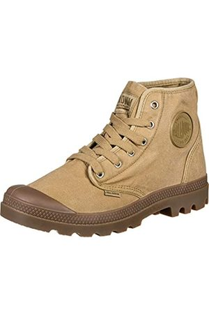
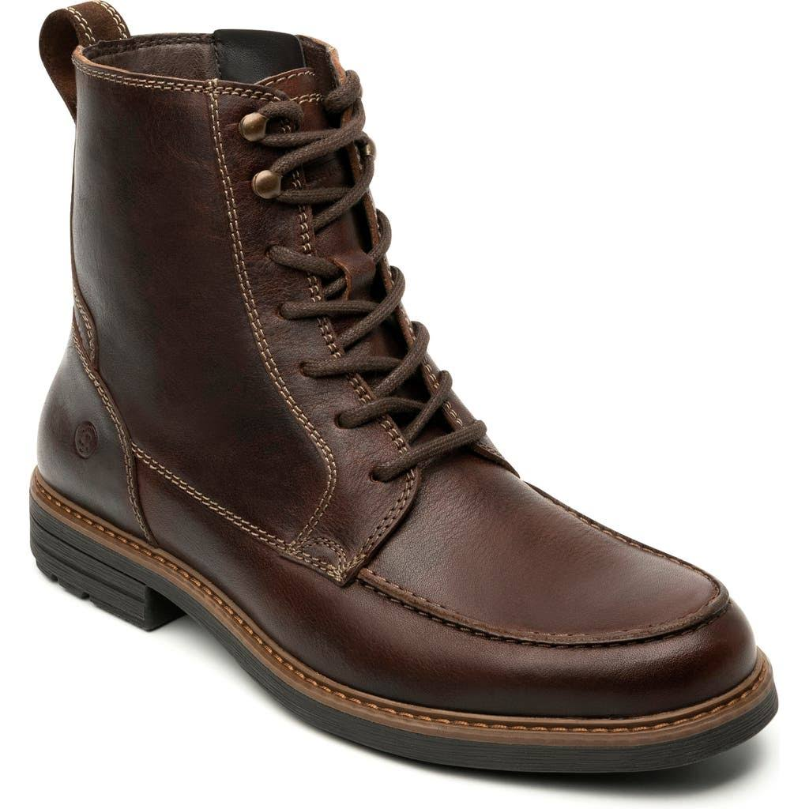

 Mantén tu estilo casual refinado con esta suave bota Chelsea hecha de gamuza aterciopelada y con una suela de goma crepé.  Eleve su look casual de negocios con esta bota ligera con cordones que cuenta con tecnología FLUIDFORM y protección impermeable para mantenerlo seco y cómodo.  Los detalles elásticos aseguran un ajuste flexible para una atractiva bota Chelsea confeccionada con cuero flexible.  Impermeable al viento y la lluvia, esta versión Chelsea de la bota de goma Original también es una compañera casualmente atractiva en los días lluviosos.  Manténgase seco y cómodo en clima húmedo con esta bota impermeable con costuras selladas que cuenta con la plantilla enerG Comfort System de UGG y una suela de goma White Spider con agarre.
 La construcción impermeable con costuras selladas y el aislamiento PrimaLoft® Eco lo mantienen un paso por delante de los elementos en una bota icónica hecha de cuero duradero de primera calidad.  Un híbrido de una bota de senderismo y una zapatilla deportiva de caña alta, este estilo impermeable está equipado con una plantilla acolchada de EVA y una suela de goma resistente.  Un forro de punto suave significa comodidad fácil en una bota chukka de corte limpio con amortiguación truTech y soporte inteligente para el arco.  El estilo de zapatillas vintage marca una bota de lona fresca con una puntera de goma con estampado de diamantes.  El cuero rico y la puntera lisa clásica enriquecen una hermosa bota con cordones con un atractivo versátil.